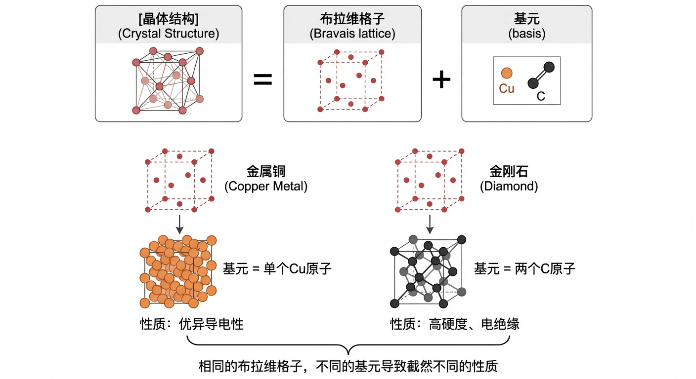
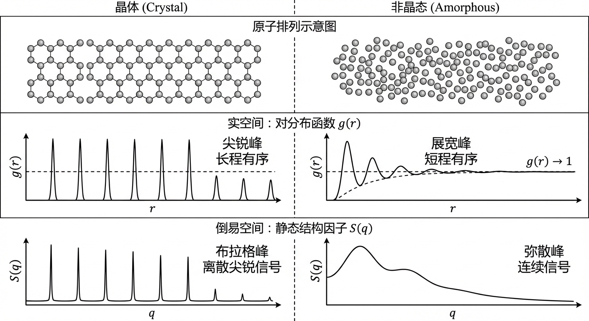
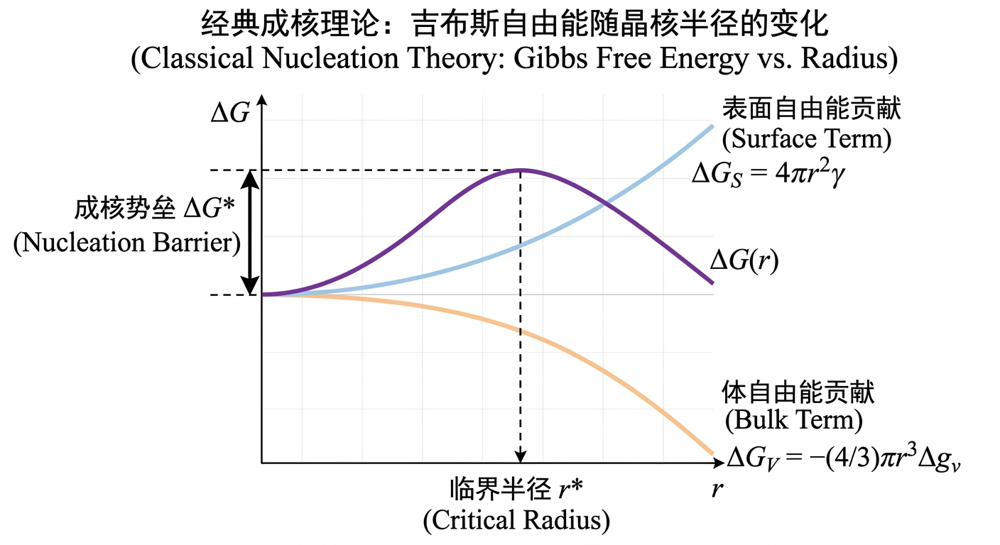
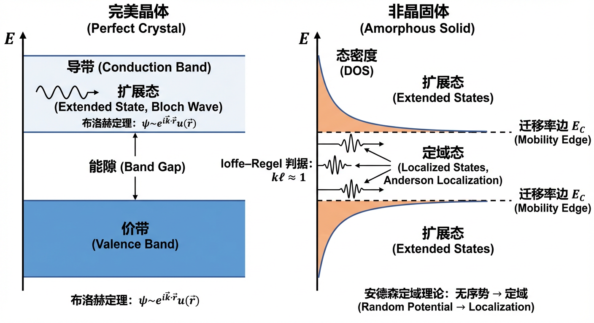
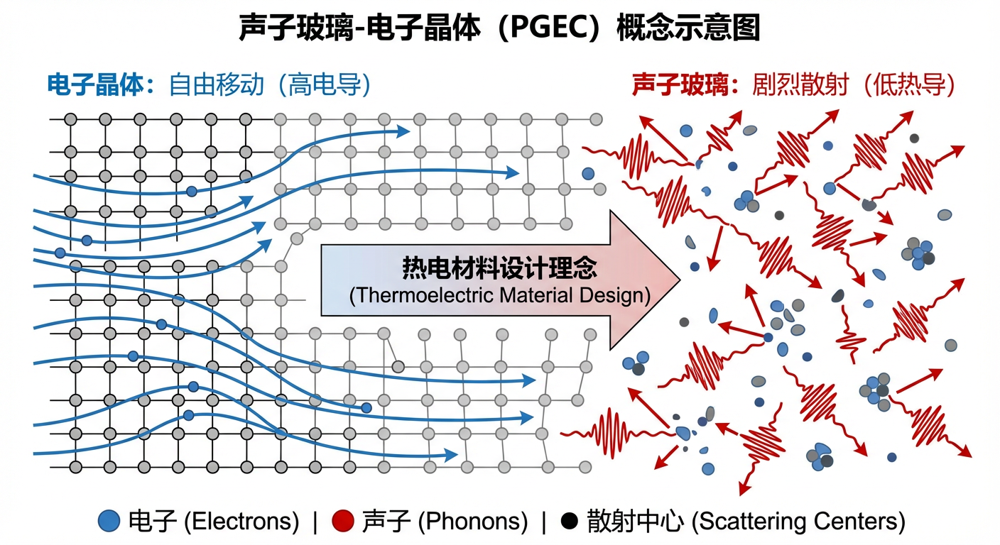
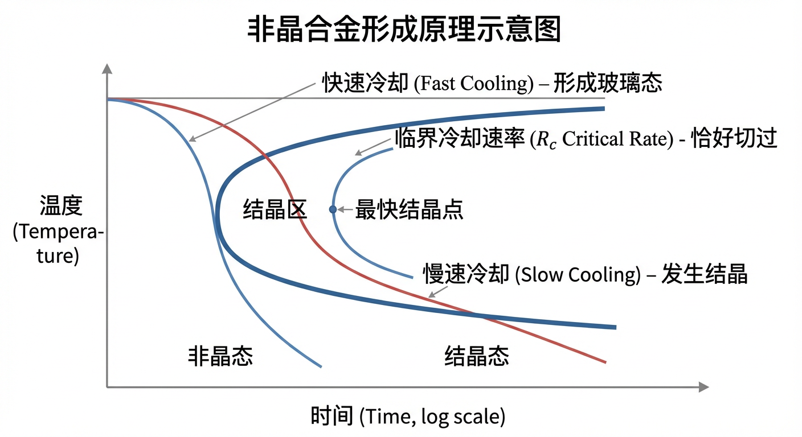

固体物质的原子排列方式——有序或无序——是决定其宏观性质的根本因素。从半导体芯片的硅晶体到窗户的玻璃，晶态与非晶态固体构成了我们物质世界的基石。然而，仅仅将它们区分为“规则”与“不规则”的排列是远远不够的。要真正理解和驾驭材料，我们必须深入探究这两种形态在结构、能量和形成动力学上的本质区别，并阐明这些区别如何转化为功能上的巨大差异。本文旨在系统性地填补这一认知鸿沟，为读者构建一个从基础原理到前沿应用的完整知识框架。
在接下来的内容中，我们将分三个章节展开探讨。第一章“原理与机制”将奠定理论基础，详细剖析晶体与非晶体在原子尺度上的结构差异，阐明其在热力学和动力学上的不同地位，并解释这如何导致它们在电子和热输运性质上表现出迥异的行为。第二章“应用与跨学科连接”将理论付诸实践，通过相变存储器、热电材料、金属玻璃和药物制剂等具体实例，展示有序与无序的概念如何在材料科学、物理、工程乃至生命科学领域中催生创新。最后，第三章“动手实践”提供了一系列精心设计的问题，旨在通过计算和分析，加深读者对核心概念的定量理解。
让我们首先进入第一章，从最基本的结构描述开始，揭开晶态与非晶态固体世界的奥秘。
固体物质根据其内部原子排列的有序程度，可分为两大类：晶体和非晶体。前者以其完美的周期性结构为特征，而后者则表现出长程无序性。本章将深入探讨这两种固体形态的结构、热力学、动力学以及物理性质背后的基本原理与机制。我们将从最基本的结构描述开始，逐步揭示为何晶体是热力学稳定态而非晶体是亚稳态，并阐明非晶态固体（或称玻璃）的形成机理。最后，我们将探讨这种结构上的根本差异如何导致其在电子和热输运性质上表现出截然不同的行为。
固体结构的核心区别在于是否存在长程平移对称性。这种对称性的有无，不仅决定了我们描述物质的方式，也从根本上决定了其物理性质。
晶体结构可以通过两个基本概念来精确描述：布拉维格子 (Bravais lattice) 和 基元 (basis)。布拉维格子是一个无限的、由离散点构成的阵列，它定义了晶体的平移对称性。空间中的任意一个格点 $\mathbf{R}$ 都可以通过三个线性无关的初基平移矢量 $\mathbf{a}_1, \mathbf{a}_2, \mathbf{a}_3$ 的整数组合得到：$\mathbf{R} = n_1\mathbf{a}_1 + n_2\mathbf{a}_2 + n_3\mathbf{a}_3$，其中 $n_i$ 为整数。布拉维格子本身是一个纯粹的数学抽象，代表了周期性。
而基元，或称之为“基组”，则是在每个格点上放置的原子、离子或分子集团。一个基元可以包含一个或多个原子，这些原子相对于其所在的格点有固定的坐标。完整的晶体结构便是将同一个基元精确地复制到每一个布拉维格点上而形成的。因此，我们可以得到一个重要的关系式：晶体结构 = 布拉维格子 + 基元。
深刻理解布拉维格子与基元的区别至关重要，因为它揭示了一个事实：仅有相同的平移对称性并不足以决定材料的性质。基元的构成——包括原子的种类、数量和相对位置——在决定材料的物理化学性质方面扮演着同等甚至更重要的角色。例如，面心立方（FCC）布拉维格子可以作为多种截然不同材料的结构框架。当基元是单个铜原子（如金属铜）时，每个原子占据格点位置，形成紧密堆积结构，配位数为12，表现出优异的导电性。然而，若在同一个FCC布拉维格子上，放置一个包含两个碳原子的基元（一个位于格点 $(0,0,0)$，另一个位于分数坐标 $(\frac{1}{4},\frac{1}{4},\frac{1}{4})$），则会形成金刚石结构。这种结构具有四面体配位，配位数为4，原子间通过强共价键连接，从而使金刚石成为一种硬度极高、带隙巨大的电绝缘体。同样地，在二维蜂窝状结构中，如果构成基元的两个原子是相同的（如石墨烯中的两个碳原子），材料会呈现出半金属性；而如果它们是不同的（如六方氮化硼中的硼和氮原子），则会因为子晶格对称性破缺而打开一个宽带隙，使材料成为绝缘体 。这些例子雄辩地证明，基元内部的构型和化学成分决定了单位晶胞内的周期性势场 $V(\mathbf{r})$，进而决定了材料的电子能带结构和宏观性质。

长程周期性有序在实验上有明确的表征，无论是在实空间还是倒易空间（或称动量空间）。
在实空间中，结构信息由对分布函数 (pair distribution function) $g(r)$ 描述。$g(r)$ 描述了以一个原子为中心，在距离 $r$ 处找到另一个原子的概率密度，并相对于理想气体的均匀分布进行了归一化。对于理想晶体，原子精确地位于由布拉维格子定义的壳层上。因此，其 $g(r)$ 在这些壳层半径处表现为一系列无限尖锐的狄拉克 $\delta$ 函数峰。即使考虑热振动，这些峰也只是被展宽，但它们的位置和存在性会延伸至任意大的 $r$ 值。这意味着函数 $g(r)-1$ 在 $r \to \infty$ 时不会衰减至零，而是包含一个不衰减的周期性分量，这是长程有序的直接体现。
在倒易空间中，结构信息由静态结构因子 (static structure factor) $S(\mathbf{q})$ 描述，它可以通过X射线或中子衍射等散射实验测量得到。$S(\mathbf{q})$ 与 $g(r)-1$ 通过傅里叶变换相关联。根据傅里叶分析的基本原理，一个在实空间中不衰减的周期性函数，其傅里叶变换必然在倒易空间中表现为一系列离散的、无限尖锐的奇点。对于晶体而言，这些奇点就是著名的布拉格峰 (Bragg peaks)，它们精确地出现在倒易格点 $\mathbf{G}$ 上。因此，一个理想晶体的 $S(\mathbf{q})$ 由一系列位于非零倒易矢量处的 $\delta$ 函数峰组成，这些峰叠加在一个可能由热振动或无序引起的连续漫散射背景之上。布拉格峰的存在是晶体长程平移对称性的明确指纹 。
与晶体相反，非晶态固体在原子尺度上缺乏长程周期性。这直接导致了我们无法使用布拉维格子和基元来描述其结构。
在实空间中，非晶态固体的 $g(r)$ 表现出与晶体截然不同的行为。在短程范围内（通常是几个原子间距），$g(r)$ 会显示出一些展宽的峰，对应于第一、第二等近邻配位壳层。这表明非晶体中仍然存在明确的短程有序 (Short-Range Order, SRO)，例如，二氧化硅玻璃中基本的$\text{SiO}_4$四面体单元。然而，随着距离 $r$ 的增大，这些峰迅速展宽并衰减。在足够大的距离上，找到一个原子的概率趋于平均密度，即 $g(r) \to 1$。这表明原子位置在长程上是完全不相关的。
在倒易空间中，由于 $g(r)-1$ 在大 $r$ 处衰减为零并且是可积的，其傅里叶变换 $S(\mathbf{q})$ 将是一个连续函数。它会表现出一些宽化的、弥散的峰，其位置对应于短程有序的特征长度（如平均原子间距），但绝不会出现 $\delta$ 函数形式的布拉格峰。非晶态固体衍射图谱中尖锐布拉格峰的缺席，是其长程无序的决定性证据 。

既然无法用确定的格点位置来描述非晶结构，我们必须转向统计学方法来量化其结构特征。这一框架包括多个层次的描述符：
二体关联函数: 这是最基本的层次，包括我们已经讨论过的 $g(r)$ 和 $S(q)$。对于多组分非晶材料，如金属玻璃，还需要使用偏对关联函数 (partial pair correlation functions) $g_{\alpha\beta}(r)$，它专门描述 $\alpha$ 类原子和 $\beta$ 类原子之间的关联。
局域环境统计: 为了更深入地理解短程有序，需要统计原子周围的几何环境。这包括配位数分布 (coordination number distribution) $P(z)$ 和键角分布 (bond-angle distribution) $P(\theta)$。与晶体中固定的配位数和键角不同，非晶体中的这些量在一个范围内分布。
拓扑与中程有序: 对于网络结构的玻璃（如 $\text{SiO}2$ 或 $\text{GeSe}_2$），仅有 SRO 描述是不够的。中程有序 (Medium-Range Order, MRO) 指的是超出最近邻范围、在几个原子间距尺度上（约 5-20 Å）仍然存在的结构关联。MRO 通常通过环尺寸分布 (ring-size distributions) 等拓扑统计来表征。在衍射图谱中，MRO 的一个重要标志是在低 $Q$ 值（通常在 $1-2 \text{ Å}^{-1}$）处出现的一个特征峰，称为第一尖锐衍射峰 (First Sharp Diffraction Peak, FSDP) 。FSDP 的位置 $Q \approx 2\pi/d$，而其峰宽 $\Delta Q$ 则与 MRO 的关联长度 $\xi$ 成反比，$\Delta Q \approx 2/\xi$ 。}}$ 与 MRO 的特征周期性长度 $d$ 近似满足 $Q_{\text{FSDP}
晶体和非晶体在结构上的差异根植于它们在热力学和动力学上的不同地位。简单地说，晶体是热力学上的稳定基态，而非晶体是动力学上受阻的亚稳态。
在给定的温度和压力下，一个系统的热力学平衡态由其吉布斯自由能 (Gibbs Free Energy) $G = H - TS$ 的最小值决定，其中 $H$ 是焓，$S$ 是熵，$T$ 是温度。对于一种可以结晶的物质，在熔点 $T_m$ 以下，其晶态的焓 $H_{\text{cryst}}$ 低于液态或非晶态的焓 $H_{\text{amorph}}$，因为原子在规则的晶格中形成了更强的化学键，释放了更多能量。同时，晶态的有序性远高于非晶态的无序性，因此其熵 $S_{\text{cryst}}$ 也远低于 $S_{\text{amorph}}$。
从非晶态到晶态的转变，其焓变 $\Delta H_{\text{amorph} \to \text{cryst}}$ 是负的（放热），而熵变 $\Delta S_{\text{amorph} \to \text{cryst}}$ 也是负的（熵减）。因此，这一转变的吉布斯自由能变化为 $\Delta G_{\text{amorph} \to \text{cryst}} = \Delta H - T\Delta S$。由于 $\Delta H$ 为负，尽管 $-T\Delta S$ 项为正（不利于转变），但在熔点以下，焓变的驱动力通常占主导地位，使得总的 $\Delta G$ 为负值。这表明从非晶态到晶态的转变是一个自发过程。因此，在热力学上，晶体是最终的稳定平衡态，而非晶态则是一种能量较高的亚稳态 。
既然晶态更稳定，为什么非晶态固体能够存在？答案在于动力学。从过冷液体（非晶态的前驱体）到晶体的转变并非瞬间完成，它需要克服一个能量壁垒。根据经典成核理论 (Classical Nucleation Theory, CNT)，在过冷液体中自发形成一个微小的晶体胚芽（称为晶核）时，系统的自由能变化包含两个相互竞争的项。
体自由能贡献: 晶核的形成使得一部分高能量的液体转变为低能量的晶体，这导致了自由能的降低。对于一个半径为 $r$ 的球形晶核，这部分贡献为负，且与体积成正比：$\Delta G_V = -\frac{4}{3}\pi r^3 \Delta g_v$，其中 $\Delta g_v$ 是单位体积的结晶驱动力（一个正值）。
表面自由能贡献: 晶核的形成同时创造了一个晶体-液体界面，这需要消耗能量。这部分贡献为正，与表面积成正比：$\Delta G_S = 4\pi r^2 \gamma$，其中 $\gamma$ 是单位面积的界面能。
总的自由能变化为 $\Delta G(r) = \Delta G_S + \Delta G_V = 4\pi r^2 \gamma - \frac{4}{3}\pi r^3 \Delta g_v$。这个函数在 $r$ 较小时由 $r^2$ 项主导而上升，在 $r$ 较大时由 $-r^3$ 项主导而下降。其结果是在一个临界半径 (critical radius) $r^ = \frac{2\gamma}{\Delta g_v}$ 处出现一个极大值，即成核势垒 (nucleation barrier) $\Delta G^ = \frac{16\pi\gamma^3}{3(\Delta g_v)^2}$。只有当原子通过热涨落自发形成尺寸大于 $r^$ 的晶核时，该晶核才能稳定生长并引发宏观结晶。如果通过快速冷却（淬火）使体系的温度迅速降低，原子运动的速率（扩散能力）会急剧下降，使得它们没有足够的时间和能量来跨越成核势垒 $\Delta G^$ 并完成重排，从而被“冻结”在无序的液态结构中，形成非晶固体 。

非晶固体的形成过程被称为玻璃化转变 (glass transition)。当一个液体被冷却时，如果结晶被成功抑制，其黏度和结构弛豫时间 $\tau(T)$ 会随温度降低而急剧增加。玻璃化转变温度 (glass transition temperature) $T_g$ 并不是一个像熔点那样的热力学相变点，而是一个动力学概念。它通常被操作性地定义为，在特定的冷却速率 $q_c$ 下，体系的结构弛豫时间 $\tau(T)$ 增长到与实验观测时间尺度（约等于 $T/|q_c|$）相当的温度。
当 $T > T_g$ 时，液体处于（亚稳的）平衡态，其结构能够跟随温度的变化而调整。当 $T T_g$ 时，原子运动极其缓慢，结构被“冻结”，无法再达到对应温度下的平衡态，体系进入了非平衡的玻璃态。因此，$T_g$ 的值依赖于冷却速率：冷却速率越快，留给体系弛豫的时间越短，冻结就会发生在越高的温度。
为了量化玻璃的非平衡状态，引入了虚构温度 (fictive temperature) $T_f$ 的概念。$T_f$ 定义为能使平衡液体的焓（或体积）等于当前玻璃样品在相同条件下焓（或体积）的温度，即 $H_{\text{glass}} = H_{\text{eq}}(T_f)$。$T_f$ 实质上记录了玻璃结构“冻结”时的温度快照。更快的冷却速率会捕获更高温度下的液体结构，从而导致更高的 $T_f$ 和更高的玻璃态焓 。
从更深层次的理论看，这种动力学急剧变缓的现象与体系的构型熵 (configurational entropy) $S_c(T)$ 密切相关。构型熵衡量了体系在宏观状态下可访问的微观结构（原子排列方式）的数量。Adam-Gibbs关系将弛豫时间与构型熵联系起来：$\tau(T) = \tau_0 \exp(A/[TS_c(T)])$。随着温度降低，$S_c(T)$ 减小，导致 $\tau(T)$ 呈超指数增长。理论上，当 $T$ 趋近于一个被称为Kauzmann温度 $T_K$ 的点时，$S_c(T)$ 将外推至零，预示着弛豫时间的发散。这为理解玻璃化转变的根本原因——即随着冷却，可供体系探索的结构越来越少，最终导致动力学停滞——提供了热力学基础 。
晶体和非晶体在结构上的根本对立，深刻地影响了它们对电子和热的输运性质。
在完美的晶体中，电子运动于一个周期性势场 $V(\mathbf{r})$中。根据布洛赫定理 (Bloch's Theorem)，电子的本征态是遍布整个晶体的布洛赫波 (Bloch waves)，形式为 $\psi_{n\mathbf{k}}(\mathbf{r}) = e^{i\mathbf{k}\cdot\mathbf{r}}u_{n\mathbf{k}}(\mathbf{r})$，其中 $u_{n\mathbf{k}}(\mathbf{r})$ 具有晶格的周期性。这些态由晶体动量 $\mathbf{k}$ 和能带指数 $n$ 来标记，其能量 $E_n(\mathbf{k})$ 在倒易空间的布里渊区内形成连续的能带 (energy bands)，并可能被能隙 (band gaps) 分隔。在这些扩展态中的电子可以自由运动，从而产生导电性。
而在非晶固体中，长程周期性丧失，布洛赫定理不再适用。电子运动于一个随机势场中。这种无序导致了强烈的弹性散射。根据安德森定域理论 (Anderson localization theory)，足够强的无序可以将电子波函数定域 (localize) 在空间中的有限区域内。在三维系统中，通常存在一个迁移率边 (mobility edge) $E_c$，它将能量空间划分为两部分：能量处于迁移率边之外的态是扩展态，可以参与导电；而能量处于带尾、靠近迁移率边的态则是指数衰减的定域态，无法对宏观导电做出贡献。Ioffe-Regel判据提供了一个判断定域趋势的简单准则：当电子的平均自由程 $\ell$ 变得与其德布罗意波长 $\lambda = 2\pi/k$ 相当时，即 $k\ell \approx 1$，半经典的波包传播图像失效，定域效应开始显现。如果费米能级落入定域态区域（即 $k_F\ell \lesssim 1$），则材料在低温下表现为绝缘体 。

晶体和非晶体中的热输运机制同样大相径庭。
在晶体中，原子的集体振动被量子化为格波，即声子 (phonons)。声子是具有明确波矢 $\mathbf{q}$ 和能量的准粒子，它们像气体分子一样在晶体中传播并携带热量。热导率可以通过声子的玻尔兹曼输运方程来描述，其形式类似于气体动理论：$k \propto C v l$，其中 $C$ 是比热，$v$ 是声子群速度，$l$ 是平均自由程。在高温下，声子平均自由程主要受声子-声子非简谐相互作用限制，特别是需要倒易格矢参与的昂克拉普散射 (Umklapp scattering)，它不守恒晶格动量，是产生热阻的主要机制。这种散射的几率随温度升高而增加，导致热导率 $k \propto 1/T$。在极低温下，本征散射减弱，$l$ 主要由晶体尺寸 $L$ 决定（弹道输运），导致 $k \propto L$。
在非晶固体中，由于缺乏平移对称性，vibrational modes 不再是简单的平面波声子。除了低频下仍保留传播特性的“propagons”外，中高频的大部分振动模式是扩展的、但不具备传播性的“diffusons”，以及高频下的定域模式“locons”。对于 diffusons，群速度的概念失效。Allen-Feldman理论指出，热量是通过这些非传播模式之间的谐振耦合进行扩散式传递的。热阻来源于结构本身的谐波无序，而非晶体中的非简谐效应。因此，即使在纯谐波极限下，非晶体的热导率也是有限的（而完美晶体是无限的）。这导致非晶体的热导率具有非常不同的行为：它通常远低于对应的晶体，并且对温度的依赖性很弱，在一定温度范围内呈现一个“平台区”，对样品尺寸也不敏感（除非在纳米尺度）。昂克拉普散射在非晶体中是不存在的，因为其前提——周期性晶格和倒易空间——完全缺失 。
在前面的章节中，我们已经系统地阐述了晶态与非晶态固体的基本定义、结构差异以及决定其性质的核心物理化学原理。本章的目标是超越这些基础概念，展示这些原理如何在广泛的科学研究和工程技术领域中得到应用、扩展和整合。我们将通过一系列具体的应用实例，探索有序与无序这一基本二元性如何成为解决现实世界问题和推动跨学科创新的关键。本章内容将不再重复核心概念，而是聚焦于展示其在多样化、真实且交叉的背景下的实用价值。
深入理解材料的性能首先需要精确地解析其原子尺度的结构。对于晶态和非晶态固体而言，科学家们已经发展出了一系列精密的实验和计算工具，以揭示从长程有序到短程无序的结构细节。
X射线衍射（XRD）是表征晶态材料的基石技术。基于布拉格定律（Bragg's Law），$n\lambda = 2d_{hkl}\sin(\theta_{hkl})$，X射线与晶体中周期性排列的原子平面发生相干散射，产生特定的衍射图谱。每一个衍射峰都对应着一组特定的晶面（由密勒指数 $(hkl)$ 标记）。对于立方晶系等高对称性的晶体，晶面间距 $d_{hkl}$ 与晶格常数 $a$ 之间存在简单的几何关系，例如，对于体心立方（BCC）结构，$d_{hkl} = a / \sqrt{h^2+k^2+l^2}$。
在实践中，通过精确测量多个衍射峰的位置（$2\theta$ 角），可以构建一个线性化的模型，例如将 $\sin^2(\theta)$ 与 $h^2+k^2+l^2$ 关联起来。利用最小二乘法等统计学方法对所有测量数据进行拟合，可以极大地提高晶格常数 $a$ 的测定精度，有效减小单一测量的随机误差。这种方法不仅是材料科学中的常规表征手段，也是质量控制、相鉴定和新材料发现中不可或缺的工具。
与晶体不同，非晶态固体（如玻璃和非晶合金）缺乏长程有序结构，因此其X射线或中子衍射图谱表现为几个宽化的弥散峰，而非尖锐的布拉格峰。然而，这些图谱中仍然蕴含着关于材料短程和中程有序的宝贵信息。全散射技术，特别是对分布函数（Pair Distribution Function, PDF）分析，已成为研究非晶态结构的主要手段。
实验上，通过在广阔的动量转移范围（$q$空间）内收集散射强度，可以得到静态结构因子 $S(q)$。$S(q)$ 描述了原子位置的关联性。通过对 $S(q)$ 进行傅里叶变换（特别是正弦变换），可以得到实空间中的约化对分布函数 $G(r)$，其定义为 $G(r) = \frac{2}{\pi} \int_0^{Q_{\max}} q[S(q)-1]\sin(qr)dq$。$G(r)$ 的峰位直接对应于原子对之间的真实距离。例如，对于非晶二氧化硅（$a\text{-SiO}_2$），$G(r)$ 的第一个峰对应于最基本的Si-O共价键长（约 $1.61\,\text{\AA}$），第二个峰对应于$\text{SiO}_4$四面体内的O-O距离（约 $2.62\,\text{\AA}$），而第三个峰则对应于通过共享氧原子连接的Si-Si距离（约 $3.06\,\text{\AA}$）。通过分析峰的强度和面积，还可以得到配位数等信息。值得注意的是，由于原子间距是材料的内禀属性，这些峰位不依赖于所用的探针（X射线或中子），但其相对强度则因探针与不同原子核或电子云的相互作用差异而有所不同。PDF分析是连接非晶材料宏观性质与其微观无序结构的关键桥梁。
随着计算能力的飞速发展，分子动力学和蒙特卡洛模拟已成为研究物质结构，特别是从液态冷却到固态过程的有力工具。在这些模拟中，一个核心挑战是如何定量地描述和区分局域原子环境。例如，在过冷液体中，原子是否开始形成类似面心立方（FCC）、体心立方（BCC）或乃至晶体学不允许的二十面体（icosahedral）的局域有序结构？
Steinhardt键序参数（Bond-orientational order parameters）为此提供了强大的解决方案。通过计算一个中心原子与其近邻原子之间连线的方向分布，可以构建一系列基于球谐函数的旋转不变量，如二阶不变量 $Q_\ell$ 和三阶不变量 $W_\ell$。这些参数对局域结构的对称性非常敏感。例如，$\ell=6$ 时的参数被广泛用于区分不同的密堆结构。完美的FCC和六方密堆（HCP）结构表现出较大的 $Q_6$ 值，而BCC结构的 $Q_6$ 值则相对较小。更精细的三阶不变量 $W_6$ 甚至可以区分这些结构，例如其符号或数值大小。特别地，二十面体局域有序结构，被认为是阻碍晶体成核、促进玻璃形成的关键结构基元，其 $Q_6$ 值比FCC和HCP更大，且 $W_6$ 的绝对值也显著更大。通过在模拟体系中追踪这些参数的分布和演化，科学家可以深入洞察成核、玻璃化转变以及非晶固体中局域有序的本质。
为了从更深层次的理论上理解过冷液体和玻璃的复杂行为，物理学家引入了势能面景观（Potential Energy Landscape, PEL）的概念。这个多维（$3N$维，其中$N$为粒子数）的超曲面 $U(\mathbf{R})$ 描述了系统势能随所有粒子坐标 $\mathbf{R}$ 变化的函数。
在这个框架下，一个“固有结构”（inherent structure）被定义为势能面的一个局域极小值点，代表一个力学稳定的原子构型。整个构型空间可以被唯一地划分为各个固有结构对应的“吸引盆”（basins of attraction）。系统的动力学过程可以被优雅地分解为两部分：在盆内的振动（快过程）和从一个盆跃迁到另一个盆的结构弛豫（慢过程）。连接相邻吸引盆的最低能量路径必然通过一个一级鞍点（index-1 saddle point），该鞍点构成了跃迁的能垒。因此，玻璃的宏观动力学，如黏度的急剧增加，可以被理解为系统在探索这个复杂景观时，被越来越深的吸引盆和越来越高的能垒所“囚禁”的结果。PEL理论为玻璃态的热力学（如构型熵）和动力学（如活化过程）提供了一个统一而强大的理论基础。
材料的宏观功能直接源于其微观结构。晶态与非晶态之间的结构差异，为设计和优化具有特定电子、光学、热学和力学性能的功能材料提供了广阔的空间。
电子在周期性晶格中的行为（由能带理论描述）与在无序网络中的行为（通常涉及局域态和跳跃输运）截然不同，这种差异催生了多种重要技术。

声子（晶格振动的量子）和电子的输运同样深刻地受到结构有序度的影响，这在热电材料、软磁材料和结构材料中得到了广泛应用。

软磁材料: 在变压器和电感器等交流应用中，磁芯材料的能量损耗（主要为磁滞损耗）是一个关键问题。磁滞损耗与材料的矫顽力（$H_c$）成正比，而矫顽力源于磁畴壁在移动过程中被结构缺陷（如晶界、夹杂物）“钉扎”。非晶态合金（金属玻璃）由于不存在晶界，其结构在纳米尺度上高度均匀，大大减少了对磁畴壁的钉扎作用。因此，非晶态软磁材料通常具有极低的矫顽力和非常窄的磁滞回线，从而显著降低了在高频下的能量损耗，使其成为高效节能变压器的理想选择。
非晶合金的力学行为: 大块金属玻璃（Bulk Metallic Glasses, BMGs）是一类新兴的结构材料，以其超高的强度、巨大的弹性和优异的耐腐蚀性而著称。与晶体材料通过位错运动实现塑性变形不同，非晶合金的塑性变形是通过一种被称为“剪切转变区”（Shear Transformation Zones, STZs）的局域原子重排事件来承载的。一个STZ是包含几十到上百个原子的纳米级团簇，在外加剪切应力作用下，通过热激活过程发生协同的、不可逆的剪切变形。在低温或高应变速率下，这些STZ事件会组织成贯穿材料的剪切带，导致宏观上的塑性流动。通过纳米压痕等技术，研究人员可以探测这些塑性事件的萌生，并估算STZ的活化体积等关键参数，从而深入理解非-晶态固体的强度和韧性机制。
玻璃的普适振动异常：玻色峰: 在低温下，几乎所有玻璃材料的热学和动力学性质都表现出与对应晶体显著不同的“普适”行为。其中一个标志性特征是“玻色峰”（Boson Peak），即在太赫兹（THz）频率范围内，玻璃的振动态密度（Vibrational Density of States, VDOS）$g(\omega)$ 相对于德拜模型预测的 $g_D(\omega) \propto \omega^2$ 行为出现了一个超额。这表现为约化VDOS $g(\omega)/\omega^2$ 在一个特征频率 $\omega_{BP}$ 处出现峰值。现代物理学理论认为，玻色峰源于玻璃中弹性性质的不均匀性。声波的波长缩短到与弹性无序的特征关联长度 $\xi$ 相当时，会发生强烈的瑞利散射，导致声子不再是良定义的准粒子。这些散射模式与软区的准局域振动模式杂化，导致了在 $\omega_{BP} \sim v_T/\xi$（其中 $v_T$ 是横向声速）附近的态密度增强。玻色峰是理解玻璃中热、声输运和低温反常行为的核心。
晶态与非晶态之间的转变动力学，以及它们在自然和人工系统中的共存与竞争，是材料科学的核心议题，并与生物、医药等领域紧密交叉。
玻璃化转变的动力学本质: 玻璃化转变不是一个热力学相变，而是一个动力学现象。当液体以足够快的速率冷却时，系统来不及结晶，其黏度急剧上升，最终在玻璃化转变温度 $T_g$ 附近“冻结”成非晶态固体。$T_g$ 的一个重要特征是它依赖于冷却速率：冷却越快，系统在越高的温度下脱离平衡，测得的 $T_g$ 也越高。差示扫描量热法（DSC）是研究玻璃化转变的经典技术。通过测量不同冷却速率制备的玻璃样品在缓慢升温过程中的热容变化，可以精确确定其 $T_g$，并利用其对速率的依赖关系，结合Arrhenius或Vogel-Fulcher-Tammann (VFT) 等模型，可以估算出结构弛豫的活化能，这是理解玻璃形成能力和物理老化过程的关键参数。
非晶合金的设计与制备: 为了获得大块非晶合金，必须以足够快的冷却速率使熔体绕过结晶区。时间-温度-相变（TTT）图是描述等温结晶动力学的关键工具，图中的“C”形曲线标示了结晶开始所需的时间。曲线的“鼻子”处对应最快的结晶温度和最短的结晶时间。要形成玻璃，冷却曲线必须避免与TTT曲线相交。临界冷却速率（$R_c$）是指恰好与TTT曲线鼻子相切的冷却速率。通过Scheil加和定则等模型，可以利用TTT图数据估算出连续冷却条件下的临界冷却速率。这一原理指导着材料科学家通过调整合金成分来减缓结晶动力学（即将TTT曲线向右推），从而降低所需的临界冷却速率，实现更大尺寸非晶部件的制备。

药物制剂：提高生物利用度: 许多新型候选药物分子具有优良的药理活性，但由于其在水中的溶解度极低而难以被机体吸收，即生物利用度差。一个有效的解决方法是将其制备成非晶态形式。根据热力学原理，非晶态作为一种亚稳态，其吉布斯自由能高于对应的稳定晶态。这种额外的能量使得非晶态药物在溶剂中的饱和溶解度（$C_s$）显著高于晶态。根据Noyes-Whitney溶出速率方程，更高的溶解度意味着更大的溶出驱动力，从而导致更快的溶出速率和更迅速的吸收。因此，开发稳定的非晶药物制剂已成为现代药剂学的一个重要研究方向。
生物矿化：自然界的动力学控制策略: 从骨骼、牙齿到贝壳，生物体能够精确地构筑出复杂的矿物-有机复合材料。一个有趣的现象是，许多生物矿化过程并不直接生成最终的稳定晶相，而是遵循“奥斯特瓦尔德分步规则”（Ostwald's step rule），即先形成一个或多个亚稳态的前驱体相，例如非晶磷酸钙（ACP），然后再逐步转化为更稳定的晶相，如羟基磷灰石（HAP）。从经典成核理论的角度看，这一策略极具优势。非晶相与母液之间的界面能（$\gamma$）通常远低于晶相的界面能。由于成核能垒 $\Delta G^$ 对界面能的依赖性极强（$\Delta G^ \propto \gamma^3$），形成非晶相的动力学势垒会低得多。因此，生物体通过先沉淀一个易于成核的非晶前驱体，绕开了直接生成稳定晶相的巨大动力学障碍，从而在温和的生理条件下实现了高效的矿物构建。
通过本章的探讨，我们看到晶态与非晶态固体的概念远非静态的分类标签。从揭示宇宙基本规律的物理模型，到设计下一代计算机内存和节能设备，再到理解生命的精妙化学过程，有序与无序的对立与统一为我们提供了理解和改造物质世界的丰富视角和有力工具。对这两种固体形态的深入研究，将继续在物理、化学、材料科学、工程学乃至生命科学的交叉前沿地带，不断激发新的科学发现和技术革命。